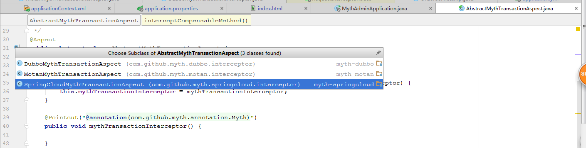
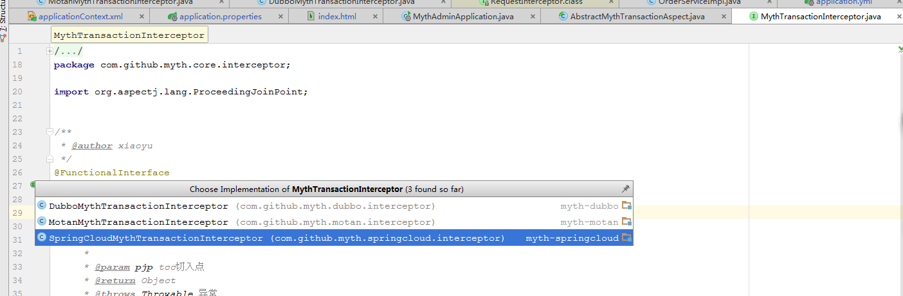

Myth源码解析系列之（六）- 订单下单流程源码解析（发起者）
前面一章我们走完了服务启动的源码，这次我们进入下单流程的源码解析~
订单下单流程源码解析（发起者）
首先保证myth-demo-springcloud-order、myth-demo-springcloud-inventory、myth-demo-springcloud-eureka、myth-demo-springcloud-account 服务以正常启动
进入源码分析前，这里先给大家预热下，介绍下几个关键部分
- 事务角色
public enum MythRoleEnum { /** * Start myth role enum. * 这里主要为： orderServer */ START(1, "发起者"), /** * Consumer myth role enum. */ LOCAL(2, "本地执行"), /** * Provider myth role enum. * 这里主要为： accountServer, inventoryServer */ PROVIDER(3, "提供者") }
- 事务状态
public enum MythStatusEnum { /** * Commit myth status enum. */ COMMIT(1, "已经提交"), /** * Begin myth status enum. */ BEGIN(2, "开始"), /** * Failure myth status enum. */ FAILURE(4, "失败") } 这里主要列了我们所使用的部分，没用的忽略
这个东西为什么在这里先讲，主要是为了让大家先了解下有这个东西，这样有助于后续代码理解 ~~ 正所谓擒贼先擒王，抓住重点部位你就离成功不远鸟 O(∩_∩)O
时序图

订单下单接口入口：http://localhost:8884/swagger-ui.html

输入： 下单数量count: 1， 金额amount： 100 ，狠狠点 【Try it out!】,发起下单请求， 我们会进入OrderController.orderPay方法
@PostMapping(value = "/orderPay") @ApiOperation(value = "订单下单接口（注意这里模拟的是创建订单并进行下单扣减库存等操作）") public String orderPay(@RequestParam(value = "count") Integer count, @RequestParam(value = "amount") BigDecimal amount) { return orderService.orderPay(count, amount); } 接着进入orderServiceImpl.orderPay 方法 @Override public String orderPay(Integer count, BigDecimal amount) { final Order order = buildOrder(count, amount); final int rows = orderMapper.save(order); if (rows > 0) { paymentService.makePayment(order); } return "success"; }
这里我们发现封装了order对象然后进行了持久化操作，成功后，我们调用paymentService.makePayment(order); 重点来了，我们先来看下paymentService.makePayment方法体的代码
@Override @Myth(destination = "") public void makePayment(Order order) { //检查数据 这里只是demo 只是demo 只是demo final AccountDO accountDO = accountClient.findByUserId(order.getUserId()); if(accountDO.getBalance().compareTo(order.getTotalAmount())<= 0){ throw new MythRuntimeException("余额不足！"); } final InventoryDO inventoryDO = inventoryClient.findByProductId(order.getProductId()); if(inventoryDO.getTotalInventory() < order.getCount()){ throw new MythRuntimeException("库存不足！"); } order.setStatus(OrderStatusEnum.PAY_SUCCESS.getCode()); orderMapper.update(order); //扣除用户余额 AccountDTO accountDTO = new AccountDTO(); accountDTO.setAmount(order.getTotalAmount()); accountDTO.setUserId(order.getUserId()); accountClient.payment(accountDTO); //进入扣减库存操作 InventoryDTO inventoryDTO = new InventoryDTO(); inventoryDTO.setCount(order.getCount()); inventoryDTO.setProductId(order.getProductId()); inventoryClient.decrease(inventoryDTO); }
方法具体业务我们暂且先不看，重点我们看下方法头部是不是有个@Myth注解，这就是实现分布式事务的关键，分布式事务主要通过@Myth注解来关联实现，这是基于aop切面思想，既然这样那么必定会有一个切入点，下面我们找到myth-core工程AbstractMythTransactionAspect类，原来这就是定义@Myth切入点的地方啊~
@Aspect public abstract class AbstractMythTransactionAspect { private MythTransactionInterceptor mythTransactionInterceptor; public void setMythTransactionInterceptor(MythTransactionInterceptor mythTransactionInterceptor) { this.mythTransactionInterceptor = mythTransactionInterceptor; } @Pointcut("@annotation(com.github.myth.annotation.Myth)") public void mythTransactionInterceptor() { } @Around("mythTransactionInterceptor()") public Object interceptCompensableMethod(ProceedingJoinPoint proceedingJoinPoint) throws Throwable { return mythTransactionInterceptor.interceptor(proceedingJoinPoint); } /** * spring Order 接口，该值的返回直接会影响springBean的加载顺序 * * @return int 类型 */ public abstract int getOrder(); }
可以知道Spring实现类的方法凡是加了@Myth注解的，在调用的时候，都会进行 mythTransactionInterceptor.interceptor 调用。也就是说一个请求链中，只要有标记该注解的业务方法，都会被加入到同一组分布式事务当中来，也就是说这么些个业务方法，要么全部执行成功，反之全部不执行~。
AbstractMythTransactionAspect 是一个抽象类，下面我们看看它的实现

我们发现针对每种rpc都对应着有一个实现类，下面我们来看
@Aspect @Component public class SpringCloudMythTransactionAspect extends AbstractMythTransactionAspect implements Ordered { @Autowired public SpringCloudMythTransactionAspect(SpringCloudMythTransactionInterceptor springCloudMythTransactionInterceptor) { this.setMythTransactionInterceptor(springCloudMythTransactionInterceptor); } public void init() { } @Override public int getOrder() { return Ordered.HIGHEST_PRECEDENCE; } }
我们注意到它实现了Spring的Ordered接口，并重写了 getOrder 方法，返回了 Ordered.HIGHEST_PRECEDENCE 那么可以知道，他是优先级最高的切面，这里dubbo,motan也是一样。 我们再来看MythTransactionInterceptor
接口，也是类似，springcloud、dubbo、motan都对应一个实现类

看完这里我们知道，我们知道此时代码不会直接进入paymentService.makePayment方法，而是先进入切面SpringCloudMythTransactionInterceptor，代码如下
@Override public Object interceptor(ProceedingJoinPoint pjp) throws Throwable { MythTransactionContext mythTransactionContext = TransactionContextLocal.getInstance().get(); if (Objects.nonNull(mythTransactionContext) && mythTransactionContext.getRole() == MythRoleEnum.LOCAL.getCode()) { mythTransactionContext = TransactionContextLocal.getInstance().get(); } else { RequestAttributes requestAttributes = RequestContextHolder.currentRequestAttributes(); HttpServletRequest request = requestAttributes == null ? null : ((ServletRequestAttributes) requestAttributes).getRequest(); String context = request == null ? null : request.getHeader(CommonConstant.MYTH_TRANSACTION_CONTEXT); if (StringUtils.isNoneBlank(context)) { mythTransactionContext = GsonUtils.getInstance().fromJson(context, MythTransactionContext.class); } } return mythTransactionAspectService.invoke(mythTransactionContext, pjp); }
走到这里，因为第一次进来这些变量都没有值(按理说第一次一般都记忆深刻啊~~)，所以我们会直接进入mythTransactionAspectService.invoke(mythTransactionContext, pjp)， 此时mythTransactionContext为null，
接下来我们进入MythTransactionAspectServiceImpl.invoke方法
public Object invoke(MythTransactionContext mythTransactionContext, ProceedingJoinPoint point) throws Throwable { final Class clazz = mythTransactionFactoryService.factoryOf(mythTransactionContext); final MythTransactionHandler mythTransactionHandler = (MythTransactionHandler) SpringBeanUtils.getInstance().getBean(clazz); return mythTransactionHandler.handler(point, mythTransactionContext); }
然后再进入MythTransactionFactoryServiceImpl.factoryOf
/** * 返回 实现TxTransactionHandler类的名称 * * @param context 事务上下文 * @return Class<T> * @throws Throwable 抛出异常 */ @Override public Class factoryOf(MythTransactionContext context) throws Throwable { //如果事务还没开启或者 myth事务上下文是空， 那么应该进入发起调用 if (!mythTransactionManager.isBegin() && Objects.isNull(context)) { return StartMythTransactionHandler.class; } else { if (context.getRole() == MythRoleEnum.LOCAL.getCode()) { return LocalMythTransactionHandler.class; } return ActorMythTransactionHandler.class; } }
重点来了，前面我们介绍了分布式事务角色，这里就是判断分布式事务角色的入口，根据判断我们进入发起者角色，也就是StartMythTransactionHandler.handler方法
/** * Myth分布式事务处理接口 * * @param point point 切点 * @param mythTransactionContext myth事务上下文 * @return Object * @throws Throwable 异常 */ @Override public Object handler(ProceedingJoinPoint point, MythTransactionContext mythTransactionContext) throws Throwable { try { //主要防止并发问题，对事务日志的写造成压力，加了锁进行处理 try { LOCK.lock(); mythTransactionManager.begin(point); } finally { LOCK.unlock(); } return point.proceed(); } finally { //发送消息 mythTransactionManager.sendMessage(); mythTransactionManager.cleanThreadLocal(); TransactionContextLocal.getInstance().remove(); } }
接下来进入mythTransactionManager.begin(point);
public MythTransaction begin(ProceedingJoinPoint point) { LogUtil.debug(LOGGER, () -> "开始执行Myth分布式事务！start"); MythTransaction mythTransaction = getCurrentTransaction(); if (Objects.isNull(mythTransaction)) { MethodSignature signature = (MethodSignature) point.getSignature(); Method method = signature.getMethod(); Class<?> clazz = point.getTarget().getClass(); mythTransaction = new MythTransaction(); mythTransaction.setStatus(MythStatusEnum.BEGIN.getCode()); mythTransaction.setRole(MythRoleEnum.START.getCode()); mythTransaction.setTargetClass(clazz.getName()); mythTransaction.setTargetMethod(method.getName()); } //保存当前事务信息 coordinatorCommand.execute(new CoordinatorAction(CoordinatorActionEnum.SAVE, mythTransaction)); //当前事务保存到ThreadLocal CURRENT.set(mythTransaction); //设置myth事务上下文，这个类会传递给远端 MythTransactionContext context = new MythTransactionContext(); //设置事务id context.setTransId(mythTransaction.getTransId()); //设置为发起者角色 context.setRole(MythRoleEnum.START.getCode()); TransactionContextLocal.getInstance().set(context); return mythTransaction; }
这个方法主要做两件事，首先封装分布式事务消息（MythTransaction）进行持久化（这里重点关注下mythTransaction.setStatus(MythStatusEnum.BEGIN.getCode());事务状态为开始，
mythTransaction.setRole(MythRoleEnum.START.getCode());事务角色为发起者，后续会用到），然后再设置MythTransactionContext事务上下文，这个主要用来传输给远端服务，这里远端服务可以理解为事务参与方。（注意这里两个消息对象都分别放到了ThreadLocal变量中）
关注下持久化操作是如何做的？
//保存当前事务信息 coordinatorCommand.execute(new CoordinatorAction(CoordinatorActionEnum.SAVE, mythTransaction)); //跟踪进去最后执行的是下面这段代码 @Override public Boolean submit(CoordinatorAction coordinatorAction) { try { QUEUE.put(coordinatorAction); } catch (InterruptedException e) { e.printStackTrace(); return Boolean.FALSE; } return Boolean.TRUE; }
我们发现消息是发送给一个QUEUE队列，大家还记得之前讲服务启动源码解析，专门开了一个线程池任务来消费QUEUE队列做消息持久化操作，对的，消息就是在这里放进去的。
好了，到此我们begin方法已经走完， 下面会调用point.proceed();就正式进入到业务方法paymentService.makePayment(order)中，这个方法里主要也是做两件事，一个调用Account服务进行账户余额扣减，另一个调用Inventory服务进行库存扣减，这两个是通过调用接口来实现, 关键代码如下
accountClient.payment(accountDTO); //AccountClient.payment方法定义 /** * 用户账户付款 * * @param accountDO 实体类 * @return true 成功 */ @PostMapping("/account-service/account/payment") @Myth(destination = "account", target = AccountService.class) Boolean payment(@RequestBody AccountDTO accountDO); inventoryClient.decrease(inventoryDTO); //InventoryClient.decrease方法定义 /** * 库存扣减 * * @param inventoryDTO 实体对象 * @return true 成功 */ @Myth(destination = "inventory",target = InventoryService.class) @RequestMapping("/inventory-service/inventory/decrease") Boolean decrease(@RequestBody InventoryDTO inventoryDTO);
注意到么，账户扣款和库存扣减方法都标记有@Myth注解，而另外两个查询方法是没有的。我们知道springAop的特性，在接口上加注解，是无法进入切面的，所以我们在这里，要采用rpc框架的某些特性来帮助我们获取到 @Myth注解信息, 这一步很重要。这里我们演示的是springcloud，所以进入myth-springcloud工程的MythFeignHandler类。（其中dubbo，与motan这部分实现分别对应：DubboMythTransactionFilter 和 MotanMythTransactionFilter 类， 都是通过框架自身过滤器特性来实现， 逻辑与springcloud一样，只是实现上有少许差别~ 童鞋们一看便知，这里不再赘述~）
public Object invoke(Object proxy, Method method, Object[] args) throws Throwable { if (Object.class.equals(method.getDeclaringClass())) { return method.invoke(this, args); } else { final Myth myth = method.getAnnotation(Myth.class); if (Objects.isNull(myth)) { return this.handlers.get(method).invoke(args); } try { final MythTransactionManager mythTransactionManager = SpringBeanUtils.getInstance().getBean(MythTransactionManager.class); final MythParticipant participant = buildParticipant(myth, method, args); if (Objects.nonNull(participant)) { mythTransactionManager.registerParticipant(participant); } return this.handlers.get(method).invoke(args); } catch (Throwable throwable) { throwable.printStackTrace(); return new Object(); } } } private MythParticipant buildParticipant(Myth myth, Method method, Object[] args) { final MythTransactionContext mythTransactionContext = TransactionContextLocal.getInstance().get(); MythParticipant participant; if (Objects.nonNull(mythTransactionContext)) { final Class declaringClass = myth.target(); MythInvocation mythInvocation = new MythInvocation(declaringClass, method.getName(), method.getParameterTypes(), args); final Integer pattern = myth.pattern().getCode(); //封装调用点 participant = new MythParticipant( mythTransactionContext.getTransId(), myth.destination(), pattern, mythInvocation); return participant; } return null; }
从源码得知，只有方法上打了@Myth注解的才会进入后续逻辑，否则直接执行返回，我们详细看下buildParticipant(myth, method, args);方法，首先从TransactionContextLocal.getInstance().get()获取事务上下文对象MythTransactionContext，这里有值吗？ 是的因为前面我们已经设置值了，所以这里能拿到值，这里大家注意下destination,target这两个属性， destination这是就是消息中间件使用的队列名称，不同服务定义不同队列来发送消息，target为目标业务calss,获取到相关值后对MythParticipant进行封装并返回，接下来我们继续往下走，进入MythTransactionManager.registerParticipant
public void registerParticipant(MythParticipant participant) { final MythTransaction transaction = this.getCurrentTransaction(); transaction.registerParticipant(participant); coordinatorService.updateParticipant(transaction); }
我们发现这里其实就是对前面MythTransaction持久化的一个更新操作，主要更新调用其他子系统接口需要执行的class，method等信息，这个消息后面会通过mq进行投递，其他子系统通过消费来进行本地执行。
好了，到此我们已经走完了发起者大部分了，紧接着就是调用执行account,Inventory服务了，也就是参与者部分，这里我们发现还有finally快部分代码未走完， 稍稍休息下，详情请见下回分解~~
大家有任何问题或者建议欢迎沟通 ，欢迎加入QQ群：162614487 进行交流